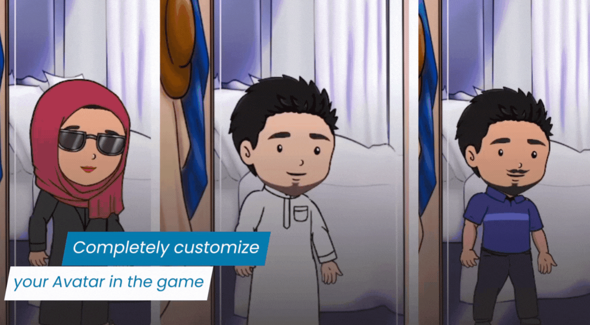
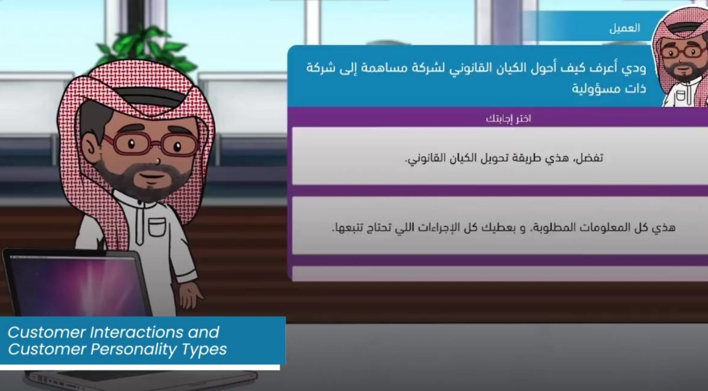
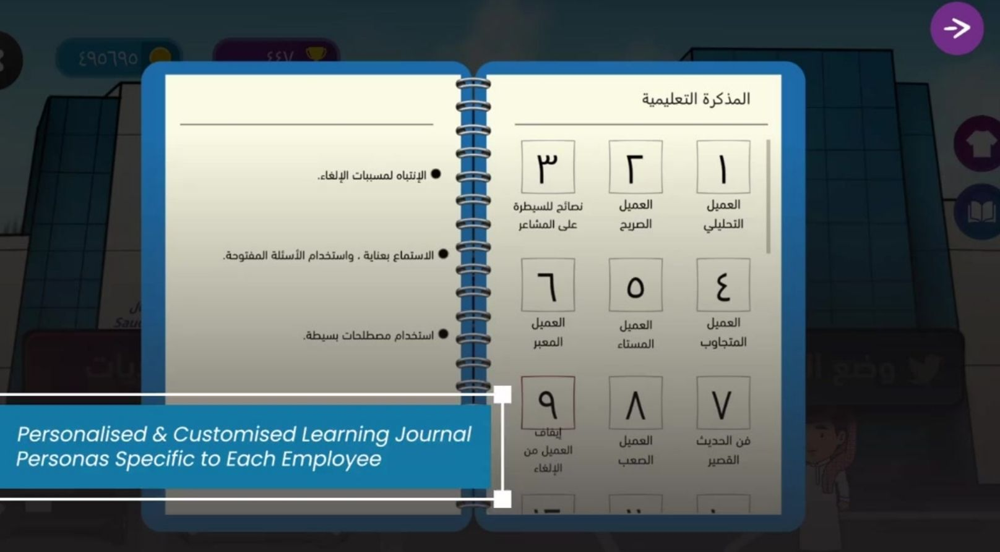
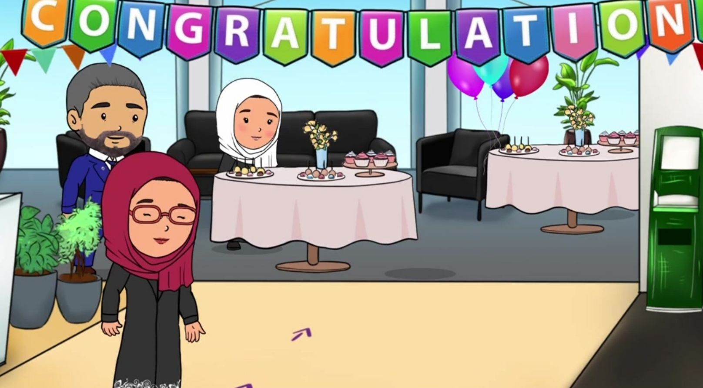
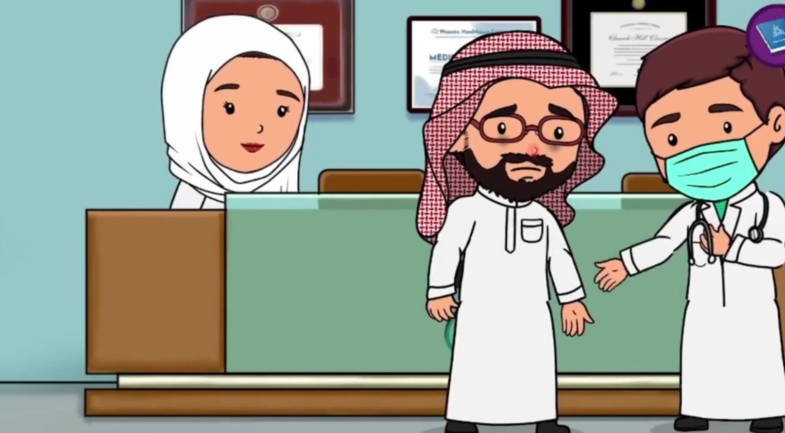
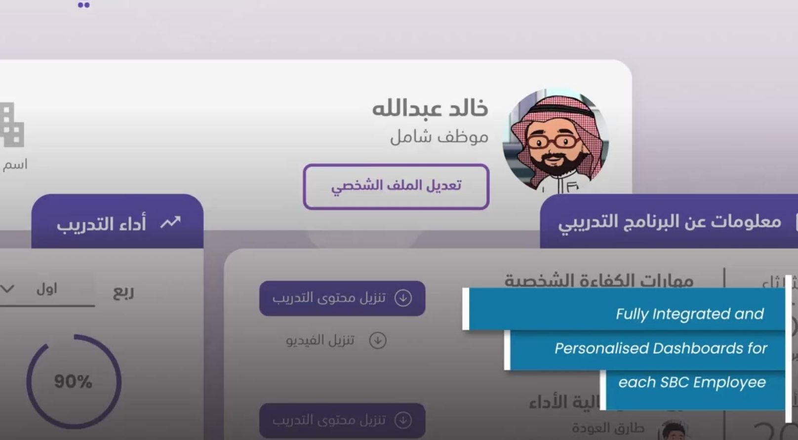

Character Customization
150+ clothing and accessories to choose from when customizing you avatar.

Personality and Emotions
NPCs and player react to dialogues and player choices affect the mood of the NPCs.

Dialogue System
Dialogie system with nested dialogues and responses.

Journal
Jorunal to keep track of all the key learnings as you progress in the game.

Minigames
This game has multiple minigames like bowling, hunting, fishing and cooking.

Celebration
As you rise through the ranks the employees will celeberte with you.


Website
Dedicated website to keep track of the employees progress in the game